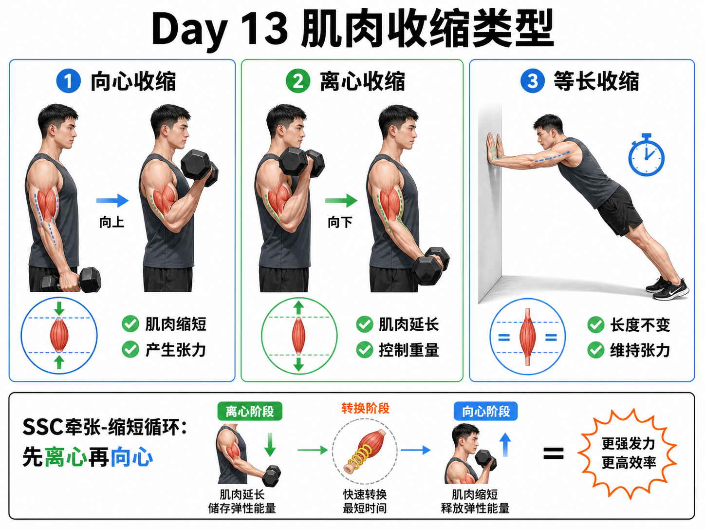

Day 13 · 肌肉收缩类型
一句话总结
肌肉收缩看两件事: 有没有产生张力、肌肉长度怎么变。缩短发力叫向心，拉长但仍控制叫离心，长度不变但顶住外力叫等长；SSC 是“先快速离心储能，再立刻向心释放”的弹簧式发力。

核心要点
-
收缩: 不等于变短，而是肌肉产生张力。
先抓结论: 考试看到“contraction”不要自动翻译成缩短。肌肉只要在发力产生张力，就属于收缩状态。常见误解
字面意思
肌肉收缩指肌肉主动产生张力，长度可能缩短、变长或不变。
大白话
像你拉绳子。你可以把绳子拉近，也可以被别人拉走但你还在控，也可以双方僵持不动。
考试价值
NSCA/NASM 常用动作阶段判断收缩类型，如深蹲下降是离心，起立是向心，底部停顿是等长。
❌以为只有肌肉变短才叫收缩。✅其实离心收缩时肌肉在变长，但它仍然主动产生张力控制外力。
-
向心收缩: 肌肉缩短并产生张力，通常负责把重量举起来。
底层机制
横桥循环让肌动蛋白和肌球蛋白相对滑动，肌小节整体缩短，肌肉长度变短。二头弯举向上时，肱二头肌缩短并带动肘关节屈曲。
真实例子深蹲起立时股四头肌和臀大肌向心发力；卧推推起杠铃时胸大肌、三角肌前束和肱三头肌向心发力。
训练含义向心阶段常决定“能不能完成动作”。速度越快、负荷越大，向心输出越难维持，所以最后几次常卡在推起或站起阶段。
常见误解❌以为向心阶段一定要爆发越快越好。✅其实目标不同节奏不同；力量和爆发可快推，技术学习和增肌可用可控速度。
-
离心收缩: 肌肉延长但仍产生张力，通常负责刹车和控制下降。
先抓结论: 离心不是“放松下去”，而是有控制地被拉长。它像刹车系统，保护关节并储存一部分弹性能量。
训练含义动作 离心阶段 主要感觉 二头弯举 哑铃下降，肱二头肌变长 上臂前侧仍在用力控制速度 深蹲 身体下蹲，股四头肌和臀肌被拉长 下肢像刹车一样控制重心下降 俯卧撑 身体下降，胸大肌和肱三头肌被拉长 不能砸向地面，要慢慢降 离心通常能承受更大张力，也更容易造成延迟性酸痛。初学者、恢复期或新动作不要突然加入大量慢离心和超负荷离心。
常见误解❌以为下降越慢一定越好。✅其实慢离心会增加张力时间和疲劳，适合特定目标，不适合所有训练日都堆满。
-
等长收缩: 肌肉长度不变但维持张力，负责稳住姿势和关节位置。
底层机制
外力和肌肉产生的力大致平衡，关节角度不明显改变。肌肉不是休息，而是在持续输出张力维持位置。
真实例子平板支撑时腹直肌、腹横肌和臀肌等长工作，避免腰椎伸展；深蹲底部停 2 秒时，髋膝周围肌群也在等长维持姿势。
训练含义等长训练能帮助学习稳定、突破薄弱角度、减少动作中乱晃。康复里常用低痛感等长收缩，先恢复张力耐受。
常见误解❌以为静止动作没有训练效果。✅其实只要张力足够，等长也能提高局部耐力、关节稳定和特定角度力量。
-
等动收缩: 全程速度恒定，通常需要专用器械控制。
真实例子
字面意思
等动 = 速度相等。无论你用多大力，机器把关节运动速度限制在设定值。
大白话
像机器给你装了限速器，你用力越大，机器给的阻力越大，但速度不变。
考试价值
等动常出现在测试和康复设备中，不是普通哑铃、杠铃、弹力带训练的常见收缩类型。
等速肌力测试仪可以让膝关节伸展以固定角速度完成，用来比较左右侧股四头肌力量或康复进度。
常见误解❌以为跑步机匀速跑就是等动收缩。✅其实等动说的是肌肉/关节在阻力设备控制下恒定角速度收缩，不是人移动速度恒定。
-
SSC: Stretch-Shortening Cycle，先离心预拉伸，再立刻向心发力。
本日只掌握概念名: SSC = 牵张-缩短循环。完整三阶段和训练安排留到 Day 76 增强式训练再展开。字面意思
Stretch 是牵张，Shortening 是缩短，Cycle 是连续循环。肌肉和肌腱先被快速拉长，再马上缩短发力。
大白话像弹簧先被压一下，马上松开就弹得更高。跳跃前快速下蹲再起跳，通常比完全静止起跳更有力。
为什么影响训练/考试SSC 把离心和向心连成一个高效发力过程，涉及弹性势能和牵张反射。今天只需会识别: 跳深、反向跳、快速变向都用到 SSC。
常见误解❌以为蹲得越深、停得越久 SSC 越强。✅其实 SSC 关键是快速离心后短时间转换；停太久会损失弹性势能。
-
动作阶段分析: 先看目标肌长度变化，再判断关节运动和外力方向。
训练含义分析步骤 怎么问自己 例子 1. 找目标肌 题目问哪块肌肉? 二头弯举问肱二头肌，不是全身所有肌肉。 2. 看长度变化 它在变短、变长，还是不变? 哑铃上升时肱二头肌变短，哑铃下降时变长。 3. 看是否控重 下降是否有主动控制? 有控制下降是离心；直接松手不是有效离心训练。 4. 看停顿 姿势不动但是否顶住外力? 墙蹲停住、平板支撑、深蹲底部停顿多为等长。 会分析阶段，就能写训练节奏。比如 3-1-1 表示离心 3 秒、底部等长 1 秒、向心 1 秒，用来控制技术和张力时间。
常见误区
❌很多人以为离心就是肌肉放松。✅其实离心是肌肉主动产生张力并被拉长，重点是控制外力。
❌很多人以为等长没有关节运动就没有训练价值。✅其实等长能强化稳定、特定角度力量和姿势控制。
❌很多人把 SSC 当成任何连续动作。✅其实 SSC 关键是快速牵张后立刻缩短，转换时间太长效果会下降。
记忆口诀
缩短向心举起来，拉长离心慢刹车；不动等长稳住它，等动机器限速度；先拉再缩叫 SSC。
翻转卡复习
实操关联
- 增肌: 用可控离心增加张力时间，但不要每组都超慢，否则疲劳和酸痛会影响总训练量。
- 减脂: 循环训练疲劳后，离心控制最容易丢；下降砸地说明重量或速度该降。
- 爆发: 跳跃、冲刺、快速变向依赖 SSC；先练落地控制，再练快速转换。
- 耐力: 长时间跑步下坡会增加股四头肌离心负担，酸痛常比平路明显。
- 康复: 疼痛期常先用低强度等长建立张力耐受，再逐步加入离心和向心。
- 技术学习: 停顿深蹲用底部等长减少反弹，让你真正控制姿势和关节位置。